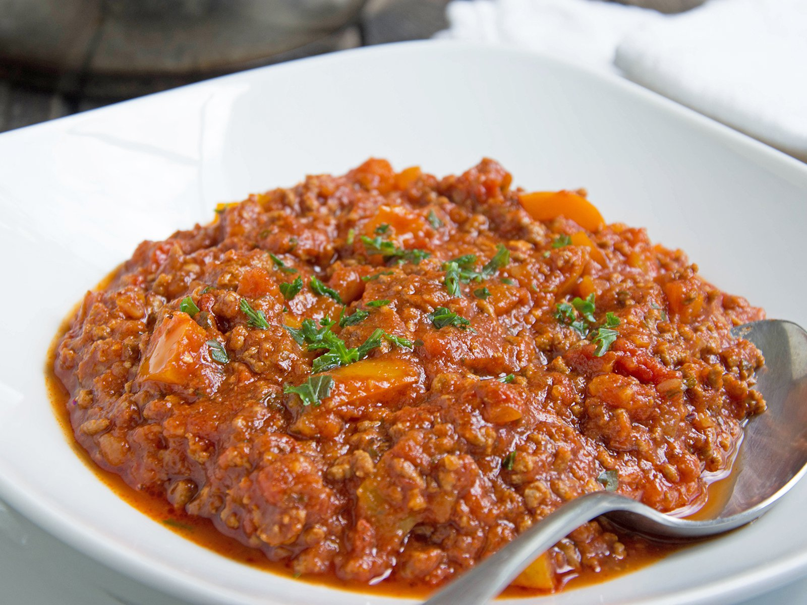

Chili con Carne ohne Bohnen
35 Min
simpel
12.05.2023
Zutaten für
| 1 kg fettreduziertes Hackfleisch |
| 400 g gehackte Tomaten |
| 250 ml Rinderbrühe |
| 30 g eingelegte Jalapeno-Scheiben |
| 1/2 Zwiebel |
| 2 Knoblauchzehen |
| 2 EL Tomatenmark |
| 1 EL Butter zum Anbraten |
| 1 TL Paprikapulver |
| 1 TL Salz |
| 1 Teelöffelspitze Chilipulver |
| 1 Teelöffelspitze Pfeffer |
| 1 TL Oregano, gerebelt |
Zubereitung
ca. 5 Minuten
Gesamtzeit ca. 30 Minuten
1. Schritt
Eingelegte Jalapeño-Scheiben, Zwiebel, Knoblauchzehen.
Die Zwiebel, den Knoblauch und die Jalapeño-Scheiben würfeln.
Die Jalapeño-Würfel vorerst beiseite stellen.
Die Zwiebel und den Knoblauch in einen großen Topf geben.
2. Schritt
Butter, Paprikapulver, Oregano, gerebelt, Chilipulver
Anschließend die Gewürze mit in den Topf geben und ebenfalls kurz (etwa 1 Minute) mit anbraten.
3. Schritt
Fettreduziertes Hackfleisch
Danach das Hackfleisch hinzugeben und etwa 10 Minuten anbraten, bis es nicht mehr rosa ist.
Währenddessen die Rinderbrühe nach Packungsanweisung anrühren.
4. Schritt
Gehackte Tomaten, Rinderbrühe, Tomatenmark, Jalapeño-WürfelAnschließend die gehackten Tomaten, das Tomatenmark, die Rinderbrühe und die Jalapeño-Würfel hinzugeben und alles bei mittlerer Hitze für etwa 10-15 Minuten köcheln lassen. Fertig.
Guten Appetit!
Rezept erstellt von